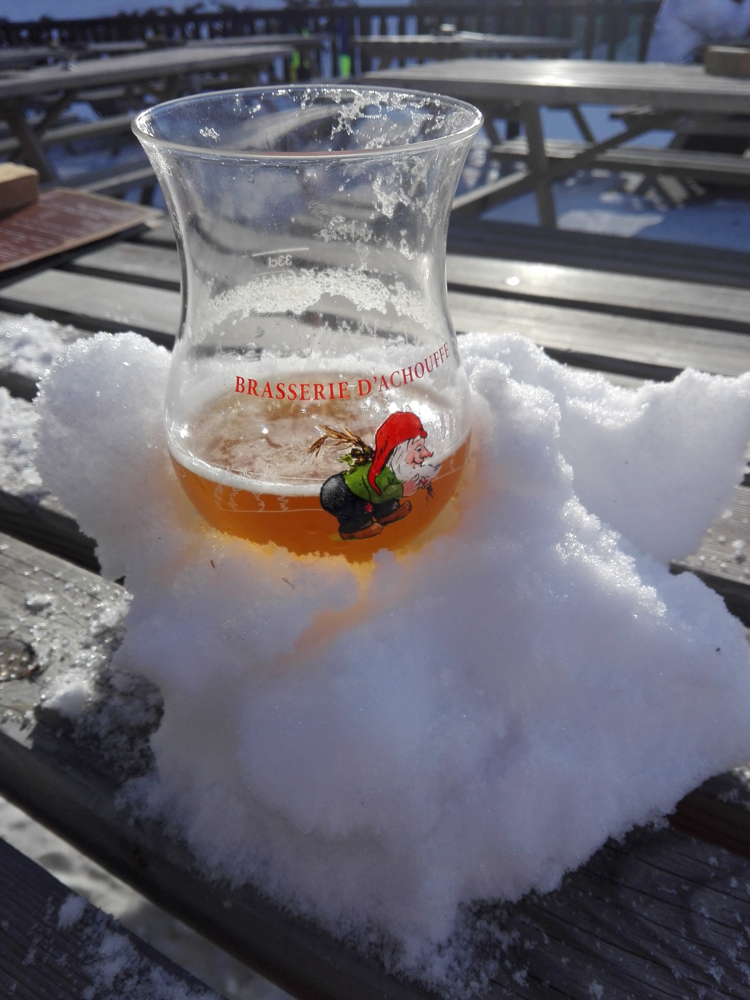
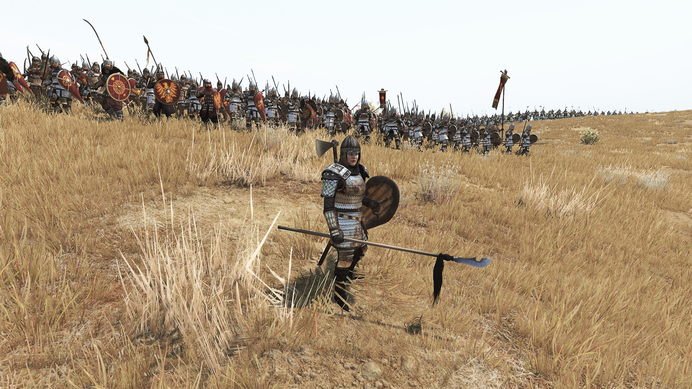
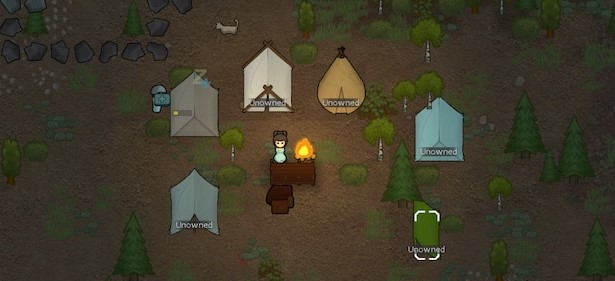

Toen ik vijf jaar oud was, begon mijn liefde voor skiën, een passie die ik deelde met mijn vader en broer. Het begon allemaal met onze eerste stappen op de latten, niet in de bergen,
maar op de indoor skipiste in Peer. Hier hebben we samen onze eerste lessen genomen, waar we onder begeleiding van een ervaren instructeur de basisvaardigheden van het skiën leerden.
De indoorpiste gaf ons de kans om op een veilige manier vertrouwd te raken met het skiën, zonder meteen de bergen in te gaan.
Na een tiental lessen, toen we ons allemaal wat zekerder voelden op de ski's, was het eindelijk zover: onze eerste echte skireis naar de Franse Alpen.
De prachtige bergen, de frisse berglucht, en de uitgestrekte witte pistes maakten een onuitwisbare indruk op me. Het was zo anders dan de indoorpiste van thuis.
Het werd een week vol nieuwe ervaringen, met vallen en opstaan, maar vooral met heel veel plezier.
Sindsdien is skiën een vaste traditie geworden in onze familie. Bijna elk jaar hebben we de kans gegrepen om terug te keren naar de Alpen, en in de loop der jaren hebben we tal van verschillende skigebieden bezocht.
We proberen meestal te gaan in de week rond nieuwjaar. Niet alleen omdat de kans groter is dat er in die periode sneeuw ligt, maar ook omdat het een bijzondere tijd van het jaar is.
Het vieren van oud en nieuw in de bergen heeft iets magisch. De gezellige sfeer in het skidorp, de lichtjes en versieringen, en de feestelijke stemming overal om ons heen maken de ervaring extra speciaal.
Op oudejaarsavond genieten we van de feestelijkheden en later op de avond van het prachtige vuurwerk dat de lucht boven de besneeuwde bergen verlicht.
Sinds enkele jaren keren we telkens weer terug naar hetzelfde skigebied, en dat is niet zonder reden. Een van de belangrijkste redenen waarom we steeds naar deze plek gaan,
is ons verblijf in het charmante "Hotel Le Grand Truc." Hoewel het hotel niet groot is, straalt het een intieme, gezellige sfeer uit die ons meteen het gevoel geeft dat we thuiskomen.
Wat dit hotel nog bijzonderder maakt, is dat de meeste gasten jaar na jaar terugkomen. Hierdoor is er over de jaren heen een hechte groep ontstaan, en velen van ons zijn inmiddels goede vrienden geworden.
Het voelt bijna alsof we met een grote familie op wintersport gaan. We delen niet alleen onze passie voor skiën, maar ook mooie momenten buiten de pistes.
Zo trekken we bijvoorbeeld 's middags gezamenlijk naar een van de sfeervolle restaurants op de skipiste om samen te lunchen.
En natuurlijk hoort bij een dag op de piste ook de après-ski, waar we volop van genieten. Na een dag vol actie op de sneeuw,
verzamelen we ons in de gezellige après-ski bar van het hotel waar we onder het genot van een drankje en muziek bekomen van een hele dag skiën.

Sinds de geboorte van mijn kinderen heb ik helaas niet meer de kans gehad om te gaan skiën. Waar ik voorheen regelmatig de besneeuwde pistes van de Alpen opzocht,
is dat met de komst van de kleintjes even op de achtergrond geraakt. Toch kijk ik ontzettend uit naar de toekomst, want zodra mijn kinderen wat ouder zijn,
ben ik vastbesloten om de traditie weer op te pakken. Het lijkt me geweldig om hen de magie van de bergen en het plezier van skiën te laten ontdekken.
We plannen dan ook zeker een reis naar de Franse Alpen, waar ik ze graag wil leren skiën.
Om 's avonds na een lange werkdag of in het weekend tot rust te komen, trek ik me graag terug aan mijn bureau om te gamen.
Voor mij is dit de perfecte manier om te ontspannen en even helemaal te ontsnappen aan de drukte van het dagelijks leven.
Gamen biedt me niet alleen ontspanning, maar ook een geweldige manier om mijn hoofd leeg te maken en mijn gedachten te verzetten.
Het mooie aan gamen is ook dat het me de kans biedt om creatief te zijn en mijn probleemoplossend vermogen te verbeteren.
Veel spellen vergen tactisch inzicht, snelle beslissingen en soms ook samenwerking met anderen, wat niet alleen leuk is maar ook stimulerend voor de geest.
Hoewel ik vaak solo game, geniet ik er ook enorm van om samen met mijn broer co-op games te spelen.
Meestal kiezen we dan voor een tactische shooter zoals "Arma 3" of een survival game Zoals "Vintage Story".
Enkele van mijn favoriete games zijn:
- Arma 3

- Dit is een realistische militaire simulator ontwikkeld door Bohemia Interactive die zich afspeeld in 2035.
De game biedt een open wereld met grootschalige gevechten op uitgestrekte kaarten zoals de mediterrane eilanden Altis en Stratis.
Spelers nemen deel aan tactische militaire operaties, waarbij realisme centraal staat, met nauwkeurige simulaties van wapens, voertuigen,
en gevechtsomstandigheden. Zowel in single player als multiplayer of co-op.
Wat deze game ook zeer interessant maakt is dat de modding community zeer veel mods voor deze game heeft gemaakt.
Van zelfgemaakte missies tot een volledige overhaul van bepaalde delen van de game, bijvoorbeeld een tweede wereldoorlog thema.
Dit is ook de game die ik het meeste met mijn broer speel.
- Mount And blade 2: bannerlord

- Dit is een actie-RPG en sandbox-spel ontwikkeld door TaleWorlds Entertainment. Het speelt zich af in een middeleeuwse fantasiewereld, genaamd Calradia.
In Bannerlord kunnen spelers hun eigen personage creëren en hun weg banen door een open wereld vol politieke intriges, handelsroutes, en militaire campagnes.
Het spel biedt een mix van strategische gevechtsmechanieken en role-playing elementen, waarbij spelers hun vaardigheden kunnen verbeteren, een leger kunnen samenstellen, en steden kunnen veroveren.
Hoewel deze game standaard zeer leuk is, kan je je game ervaring veel interessanter maken met mods. Dit gaat van simpele quality of life mods tot mods om het moeilijkheidsniveau omhoog te schoeven.
- Rimworld

- Dit is een populaire indie-game ontwikkeld door Ludeon Studios.
Het is een kolonie-simulator die zich afspeelt op een verre planeet in de ruimte. Spelers beginnen ofwel als een groep overlevenden van een crash, ofwel als één enkele holbewoner.
Het spel draait om het creëren en onderhouden van een zelfvoorzienende nederzetting, waarbij spelers moeten zorgen voor de basisbehoeften van hun kolonisten, zoals voedsel, onderdak en veiligheid.
RimWorld is bekend om zijn diepgaande AI-systeem dat unieke verhalen genereert op basis van de acties van de spelers. Dankzij deze "storytellers" is geen enkele playthrough hetzelfde.
Ook voor deze game heb je een hele bibliotheek aan mods om je game op vele verschillende manieren te kunnen spelen.